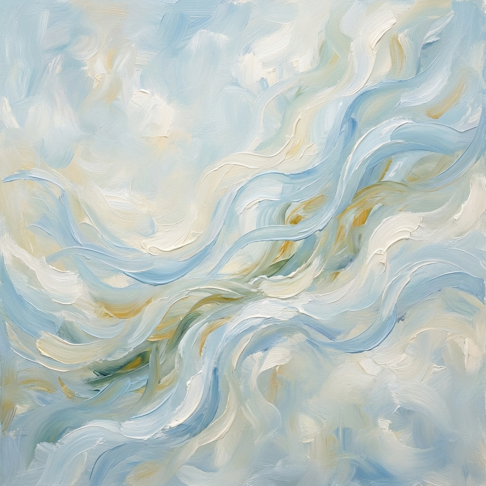

Respiro

Mentre batti il tuo respiro
con le tue possenti onde
sulla spiaggia ti vai a riposare
e porti via con te
i nostri pensieri da guarire.
con le tue possenti onde
sulla spiaggia ti vai a riposare
e porti via con te
i nostri pensieri da guarire.
Con i colori rubati alla terra e al cielo
quali pittori hai scelto
per sfidare la nostra immaginazione ?
quali pittori hai scelto
per sfidare la nostra immaginazione ?
Come un cristallo liquido
la luce ti attraversa,
svela e illumina segreti e meraviglie
intrecciate nelle acque che contieni.
la luce ti attraversa,
svela e illumina segreti e meraviglie
intrecciate nelle acque che contieni.
Con smarrimento ci pervadi
con i tuoi prodigi ci stupisci.
con i tuoi prodigi ci stupisci.
Con il tuo instancabile
movimento
cerchi ogni volta di abbattere
i nostri limiti di percezione.
movimento
cerchi ogni volta di abbattere
i nostri limiti di percezione.
Paola Spremulli